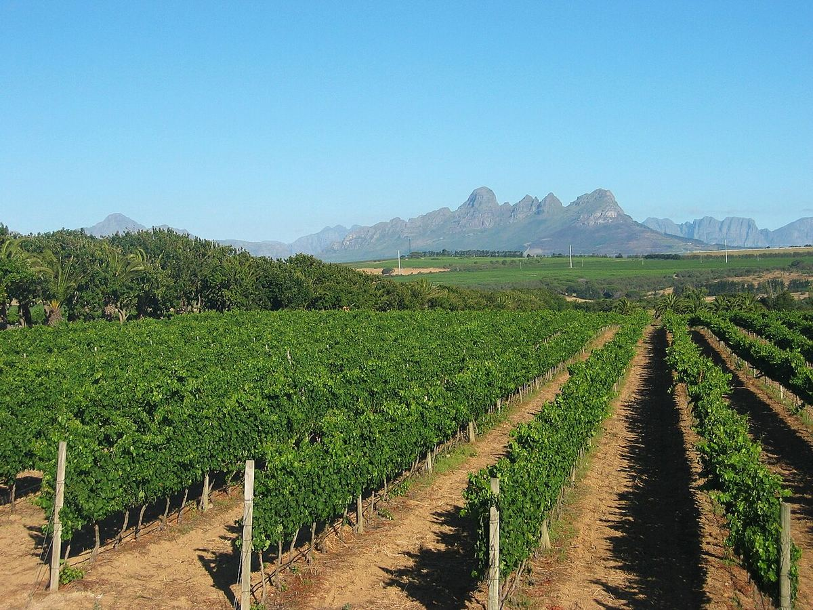

TINTO
Stellenbosch, al este de Ciudad del Cabo, es el distrito vitícola más conocido de Sudáfrica y el centro de su enseñanza y su investigación enológicas. Destaca por el Cabernet Sauvignon, las mezclas bordelesas, el Pinotage y el Chenin Blanc.

La ciudad de Stellenbosch fue fundada en 1679 por el gobernador Simon van der Stel, que le dio su nombre, y es la segunda población europea más antigua de Sudáfrica después de Ciudad del Cabo. Sus calles arboladas de robles y sus casas de estilo neerlandés del Cabo recuerdan ese pasado colonial. Desde muy pronto los colonos plantaron viñas en los valles de los alrededores, y muchas de las fincas actuales conservan edificios de los siglos XVIII y XIX.
La Universidad de Stellenbosch y el cercano instituto de Elsenburg han formado a generaciones de viticultores y enólogos, y fue en la universidad donde el profesor Abraham Izak Perold creó el Pinotage en 1925. En 1971 se inauguró aquí la primera ruta del vino del país, que contribuyó a convertir la zona en uno de los destinos enoturísticos más visitados de Sudáfrica. Hoy el distrito reúne a muchas de las fincas más reputadas del país, desde propiedades familiares históricas hasta bodegas modernas.
El clima es mediterráneo, con inviernos lluviosos y veranos cálidos y secos. La proximidad de la bahía de False Bay, al sur, aporta brisas frescas por la tarde, y el viento del sureste ayuda a mantener sanas las uvas. Las montañas que rodean el distrito, como el Simonsberg, el Helderberg y las sierras de Stellenbosch y Jonkershoek, crean una gran diversidad de altitudes y orientaciones. En las laderas predominan los suelos de granito descompuesto, profundos y de buena retención de agua; en las zonas más bajas y hacia el oeste abundan las areniscas y los esquistos. El distrito se divide en varias circunscripciones o wards, entre ellas Simonsberg-Stellenbosch, Jonkershoek Valley, Banghoek, Bottelary, Devon Valley, Papegaaiberg, Polkadraai Hills y Vlottenburg.
El Cabernet Sauvignon es la variedad tinta más prestigiosa y da vinos estructurados, con fruta negra, notas de cedro y hierbas y taninos firmes, a menudo con buena capacidad de guarda. Las mezclas de tipo bordelés con Merlot y Cabernet Franc son una especialidad de muchas fincas. El Pinotage encuentra aquí algunas de sus mejores expresiones, sobre todo a partir de viñas en vaso, y también se elaboran mezclas llamadas Cape blends que lo combinan con variedades bordelesas. Entre las blancas destacan el Chenin Blanc, a veces de viñas viejas, el Chardonnay y el Sauvignon Blanc. La Syrah completa una gama muy amplia. Muchas fincas producen vinos con la mención «Estate Wine», elaborados exclusivamente con uvas de sus propios viñedos, y la diversidad de laderas permite comparar el mismo varietal de diferentes circunscripciones.